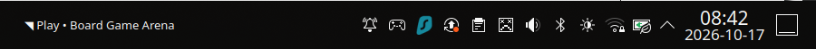
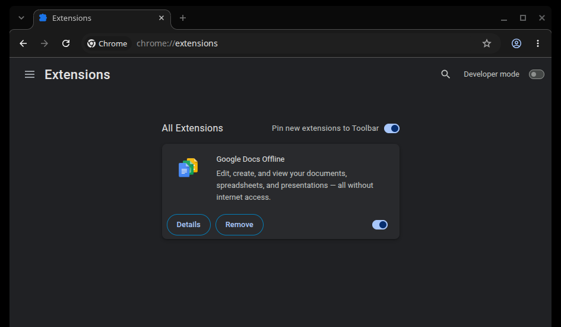
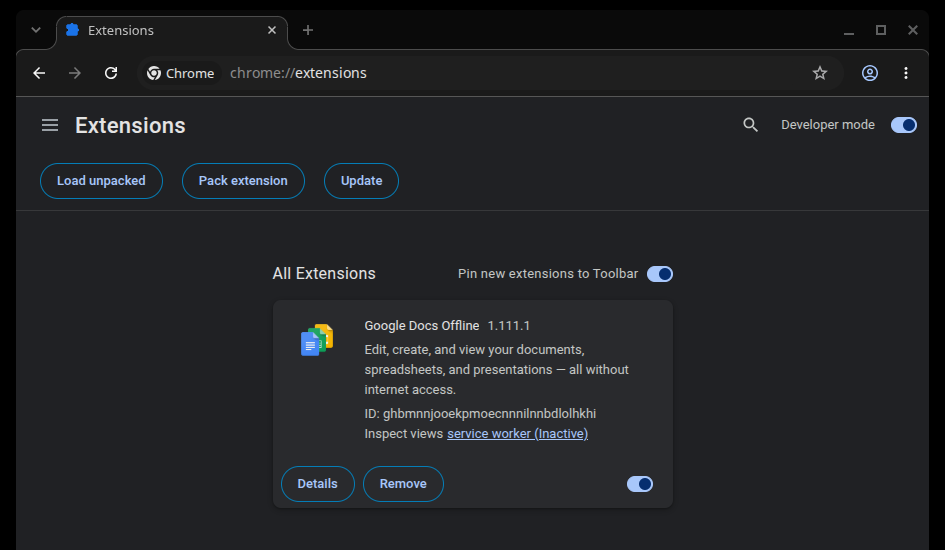
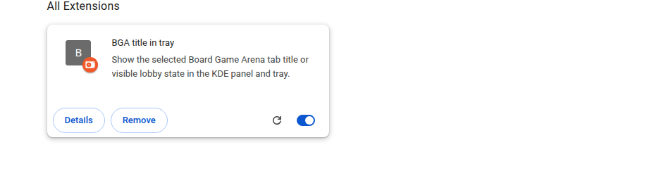

Quick start
Follow these four steps to install the tray widget and connect the browser you use for Board Game Arena. The screenshots below show the controls and the installed extension card.
1 Check and extract
In the folder containing both downloaded files, check the archive and extract it:
sha256sum -c bga-title-tray-0.4.5.tar.gz.sha256
tar -xzf bga-title-tray-0.4.5.tar.gz
cd bga-title-tray-0.4.5If you already opened this page from the extracted folder, the extraction step is complete.
2 Choose your browser
Run one command from the extracted package directory:
./bin/install.sh --browser chrome./bin/install.sh --browser chromiumThe installer checks dependencies and prints the permanent extension directory.
3 Load the extension
Open Chrome extensions in your selected browser. If your browser blocks the link from this local guide, paste chrome://extensions/ into its address bar. Turn on Developer mode, click Load unpacked, and select the installed extension directory printed by the installer.
Choose the exact extension folder path printed by the installer. It is the permanent copy; you can delete the downloaded archive and extracted folder afterward.
4 See it working
Open or refresh Board Game Arena. Its title should appear beside the Plasma system tray. Click the panel text to bring the BGA tab to the front. If no title appears, use the troubleshooting section below.


Where to click in Chrome
These are screenshots from a clean Chrome profile. Chrome may include its own default extensions; no personal browser data is shown. Select an image to see it at full size.




extension folder printed by the installer.

Requirements and installed paths
- Linux with KDE Plasma 6 and Google Chrome or Chromium.
- Python 3 with PyQt6, plus
socat,kpackagetool6, andqdbus6. Package names vary by Linux distribution. The installer names missing dependencies before changing user files. - A browser that supports Manifest V3 extensions and native messaging.
The installer keeps its files in your home folder. Normally, the extension you select in Chrome is at ~/.local/share/bga-title-tray/extension. If your computer uses a different location, follow the exact path printed by the installer. The package's extension ID stays fixed across updates.
If Plasma was not running during installation, add Board Game Arena title to a panel through panel edit mode after login. A Plasma restart may be needed before a newly installed widget appears in the panel menu.
What you will see
The panel follows the selected existing BGA tab. When BGA visibly returns to its “Play now!” lobby while Chrome still reports a Play title, the panel shows Play now! • Board Game Arena. The status command keeps Chrome's title in rawTitle and reports the visible offer and lobby markers as selectedOfferVisible and selectedLobbyVisible.
The widget's General settings include Only flash when the selected BGA tab is not active, enabled by default. If your turn begins while BGA is focused, the panel starts flashing when you switch to another tab or window. Focusing BGA stops the flash; it resumes if focus leaves while the same “You…” instruction or visible Play offer remains. The flash ends when that page state ends. The tray icon remains steady; no desktop notification is shown. Run bga-title-tray flash for a short local preview.
The extension reads BGA tab titles and whether the visible page contains the game-offer or lobby markers. Titles and state flags stay in memory and are not logged by default. Its permissions cover native messaging, scripting, and Board Game Arena pages.
Update or remove
Update
Extract the newer archive and run its installer with the same --browser choice. On Chrome extensions, click Reload on the existing unpacked extension. If the browser blocks that link, paste chrome://extensions/ into its address bar. Keep using the installed extension directory; the installer upgrades it in place and does not add another panel copy.
Remove
1. Remove the browser extension. Open Chrome extensions, find BGA title in tray, click Remove, and confirm. If your browser blocks the link from this local guide, paste chrome://extensions/ into its address bar.
2. Remove the local host and panel widget. Chrome's Remove button leaves these installed. Run the installed uninstaller with the same browser choice you used for installation:
~/.local/share/bga-title-tray/bin/uninstall.sh --browser chromeUse --browser chromium for Chromium. If the installer used a different location, run bin/uninstall.sh from that installed folder. If both browsers are registered, remove the extension in each browser and run the uninstaller once per browser; the shared runtime and widget remain until the last registration is removed. The uninstaller checks ownership before deleting files.
Troubleshooting
- Missing dependency
- Install the named command or Python 3 PyQt6 package through your distribution's package manager, then run the installer again.
- Disconnected or no title
- Check that the unpacked extension is enabled and loaded from the installed directory, and that the browser matches the installer option. Reload the extension and refresh BGA. If the title still does not appear, run the status command printed by the installer;
"connected": trueconfirms that the browser reached the app. - No panel text
- Check that Plasma 6 is running. Look for Board Game Arena title in panel edit mode, then restart Plasma if a new widget is not listed.
- Click does not raise Chrome
- The app raises the window through KWin scripting over D-Bus, because under Wayland Chrome's own request is refused while another application is active. Check that
qdbus6 org.kde.KWin /Scriptinganswers and that PyQt6 includesQtDBus. - No flash
- The default setting suppresses alerts while the selected BGA tab is active in the focused browser window. Run
bga-title-tray flashto preview the panel effect. - Native host has exited
- Clear old entries in the extension's Errors view and reload it. A new error can indicate missing PyQt6 or a stale browser manifest; re-run the installer and inspect its printed paths.